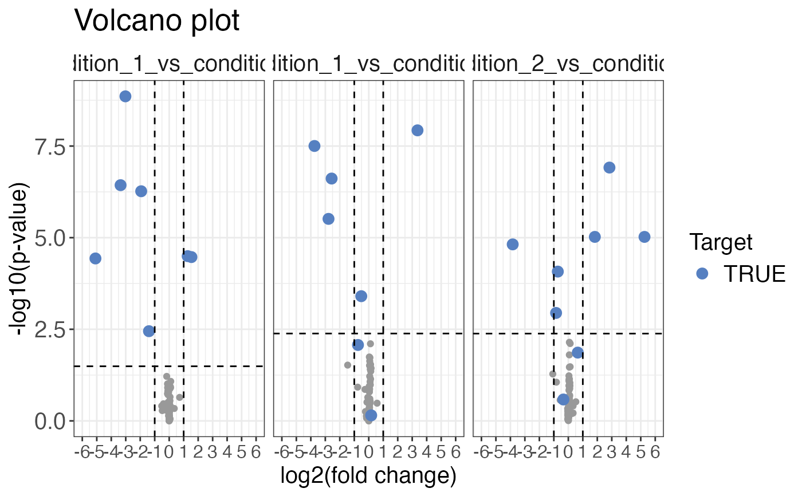

Plots a volcano plot for the given input.
volcano_plot( data, grouping, log2FC, significance, method, target_column = NULL, target = NULL, facet_by = NULL, title = "Volcano plot", x_axis_label = "log2(fold change)", y_axis_label = "-log10(q-value)", legend_label = "Target", log2FC_cutoff = 1, significance_cutoff = 0.01, interactive = FALSE )
| data | a data frame that contains at least the input variables. |
|---|---|
| grouping | a character column in the |
| log2FC | a character column in the |
| significance | a character column in the |
| method | a character value that specifies the method used for the plot.
|
| target_column | optional, a column required for |
| target | optional, a vector required for |
| facet_by | optional, a character column that contains information by which the data should be faceted into multiple plots. |
| title | optional, a character value that specifies the title of the volcano plot. Default is "Volcano plot". |
| x_axis_label | optional, a character value that specifies the x-axis label. Default is "log2(fold change)". |
| y_axis_label | optional, a character value that specifies the y-axis label. Default is "-log10(q-value)". |
| legend_label | optional, a character value that specifies the legend label. Default is "Target". |
| log2FC_cutoff | optional, a numeric value that specifies the log2 transformed fold change cutoff used for the vertical lines, which can be used to assess the significance of changes. Default value is 1. |
| significance_cutoff | optional, a character vector that specifies the p-value cutoff used
for the horizontal cutoff line, which can be used to assess the significance of changes. The
vector can consist solely of one element, which is the cutoff value. In that case the cutoff
will be applied directly to the plot. Alternatively, a second element can be provided to the
vector that specifies a column in the |
| interactive | a logical value that specifies whether the plot should be interactive (default is FALSE). |
Depending on the method used a volcano plot with either highlighted targets
(method = "target") or highlighted significant proteins (method = "significant")
is returned.
set.seed(123) # Makes example reproducible # Create synthetic data data <- create_synthetic_data( n_proteins = 10, frac_change = 0.5, n_replicates = 4, n_conditions = 3, method = "effect_random", additional_metadata = FALSE ) # Assign missingness information data_missing <- assign_missingness( data, sample = sample, condition = condition, grouping = peptide, intensity = peptide_intensity_missing, ref_condition = "all", retain_columns = c(protein, change_peptide) )#> #> #> #> #> #># Calculate differential abundances diff <- calculate_diff_abundance( data = data_missing, sample = sample, condition = condition, grouping = peptide, intensity_log2 = peptide_intensity_missing, missingness = missingness, comparison = comparison, method = "moderated_t-test", retain_columns = c(protein, change_peptide) )#>#>#>#>#>#>#>#>#>#>#>#>#>#>volcano_plot( data = diff, grouping = peptide, log2FC = diff, significance = pval, method = "target", target_column = change_peptide, target = TRUE, facet_by = comparison, significance_cutoff = c(0.05, "adj_pval") )